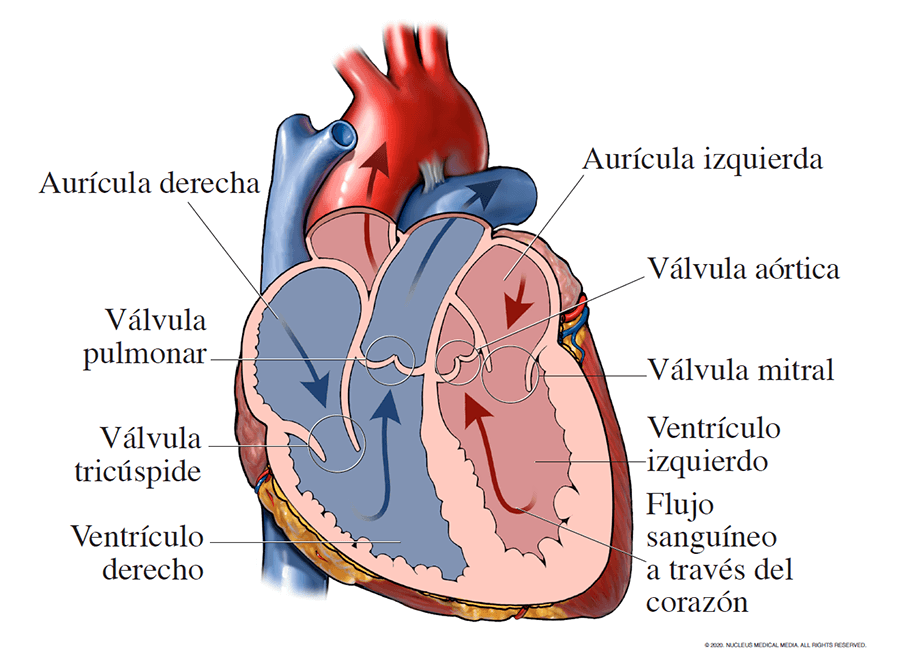

| Características | |
| El corazón protésico funciona de la misma manera: la sangre se bombea dentro y fuera de dos cámaras ventriculares, cada una equipada con dos válvulas. Los ventrículos están conectados a las aurículas, la aorta y la arteria pulmonar mediante conectores de entrada y salida. |  |